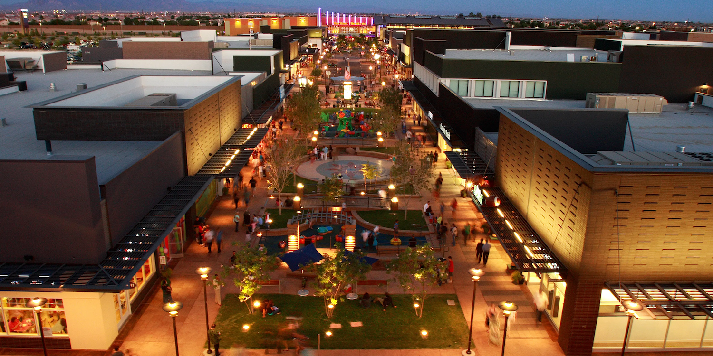

Arizona
Phoenix
Gilbert
Mesa
Contact Us

Gilbert
You've heard of CarFax? Well this is StateFax:
Population: 283,000
Year Incorporated: Jul 6, 1920
Region Within State: Central
Classification: Suburban
Average Household Income: $114,000 (compared to $92,700 for the state)